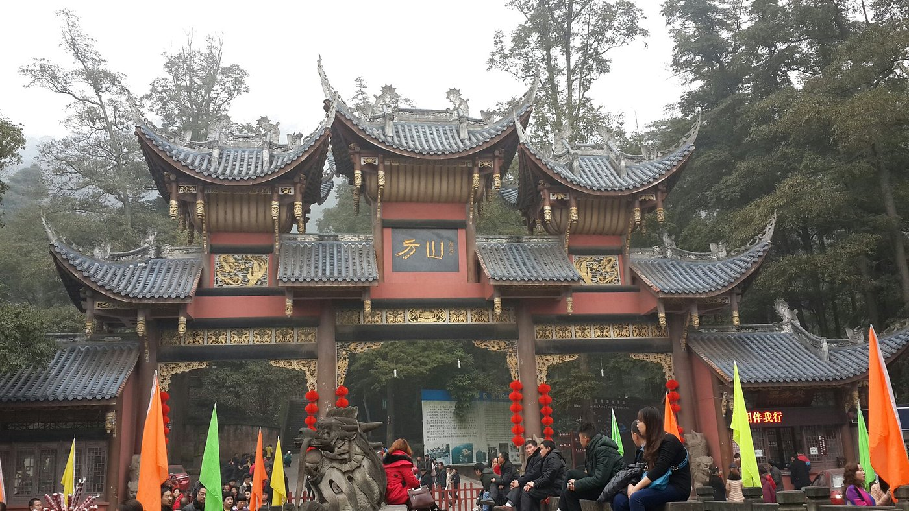
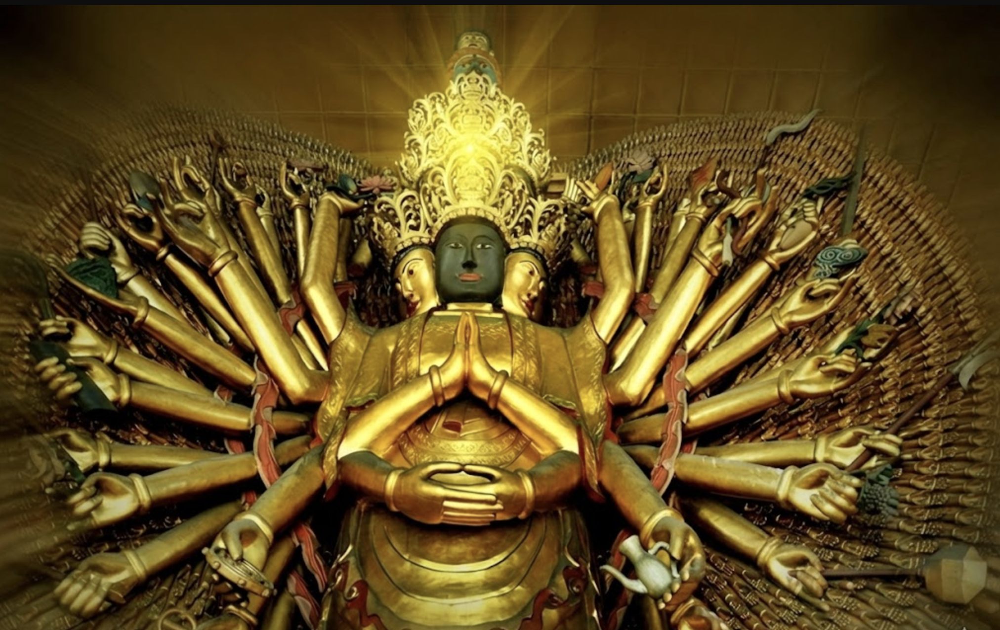
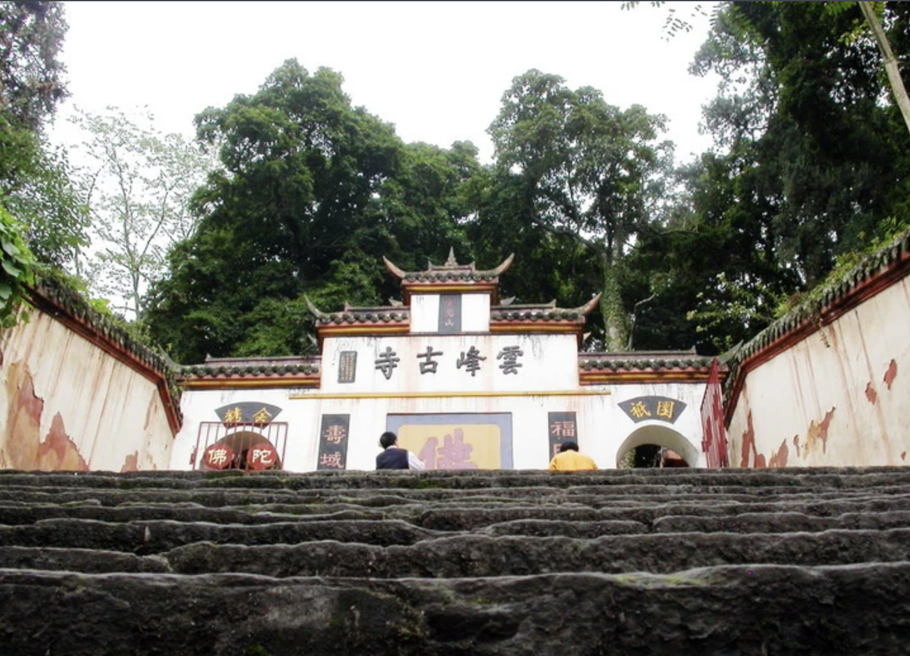
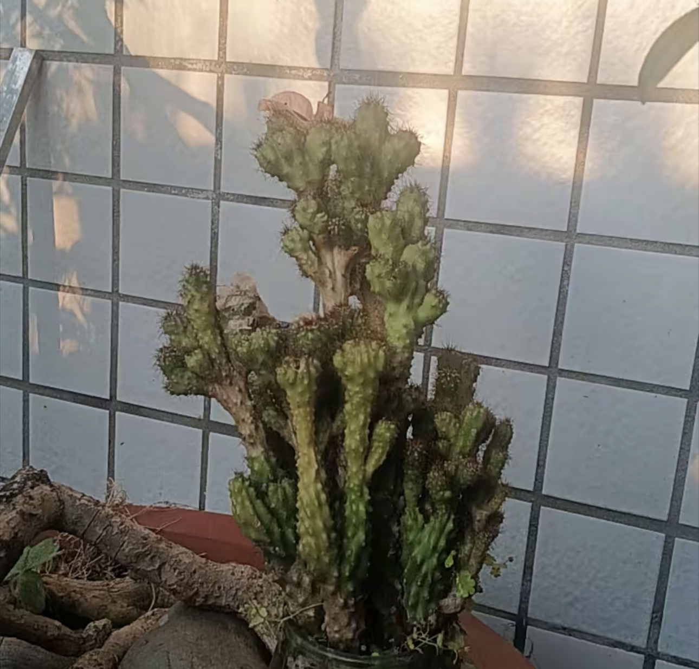
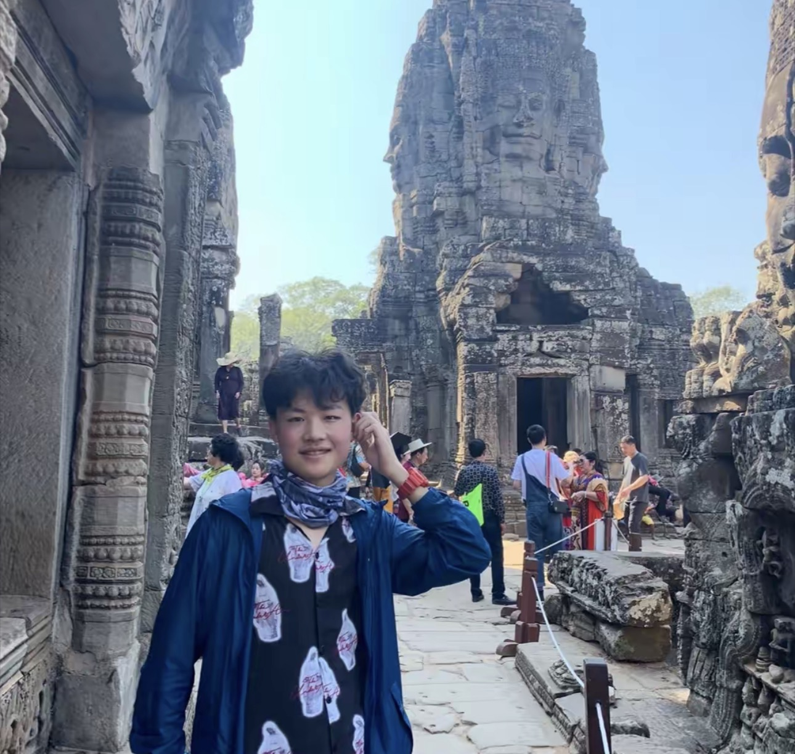
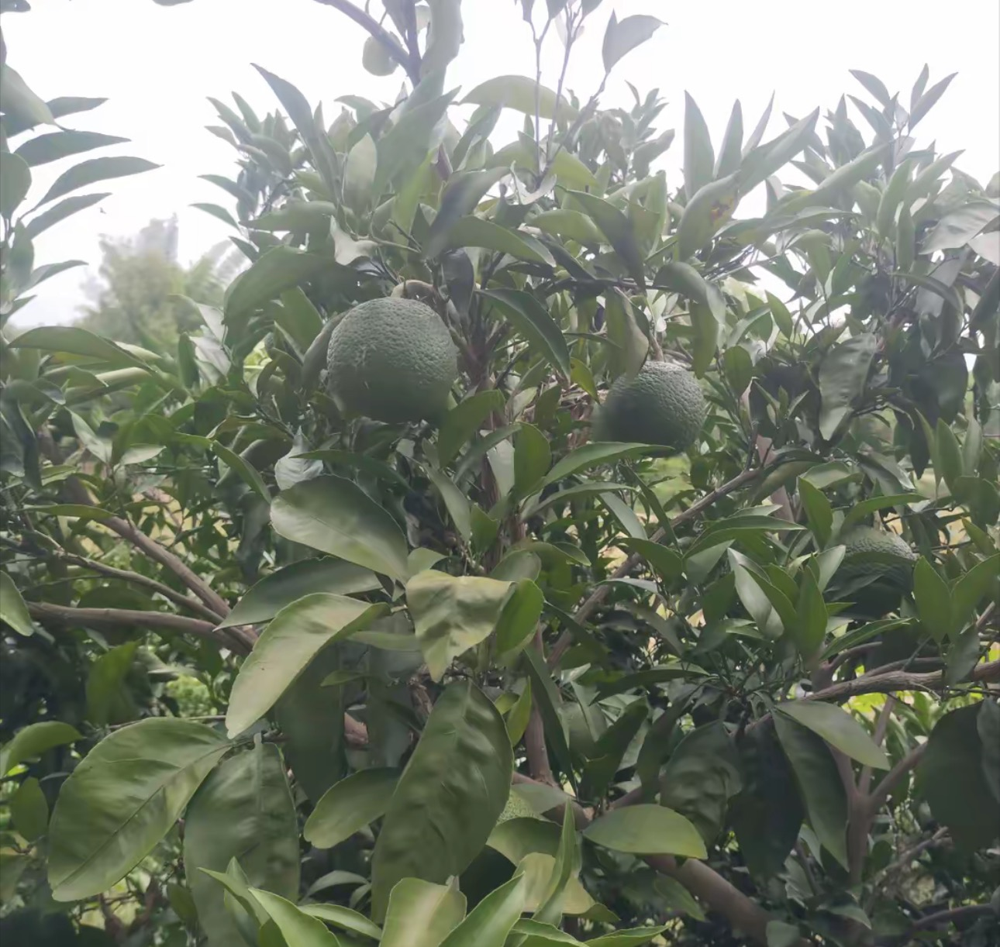

江水碧蓝 · 夕阳方山

千年香火，祈福圣地

晨钟暮鼓，禅意生活
观云海日出，方山最高点
听听大家眼中的方山

方山的空气真的太好了，爬上天梯虽然累，但看到云峰寺的那一刻觉得值了！交通指南很准。
相关景点：黑脸观音、云峰寺

真的很灵验！黑脸观音必拜。带爸妈来的，他们说这就是想要的心灵休息。
相关景点：黑脸观音

智能地图很好用，在山上不会迷路。建议大家早点去薄刀岭看日出云海，绝美。
相关景点：薄刀岭
云峰寺的晨钟暮鼓太有感觉了，方山雪霁的视野也很震撼，值得再来。
相关景点：云峰寺、方山雪霁
在仙峰石边坐了一下午，整个人都静下来了。黑脸观音和云峰寺都去了，不虚此行。
相关景点：黑脸观音、仙峰石